Ort
I call it "ort" because it is a portmanteau of "old" and "art". It's stuff from 2020 and before, which isn't too long ago, but I haven't drawn anything since then. So these'll be different than something I draw today! Also some comments on the drawings, because why not.
Multimedia Stuffs
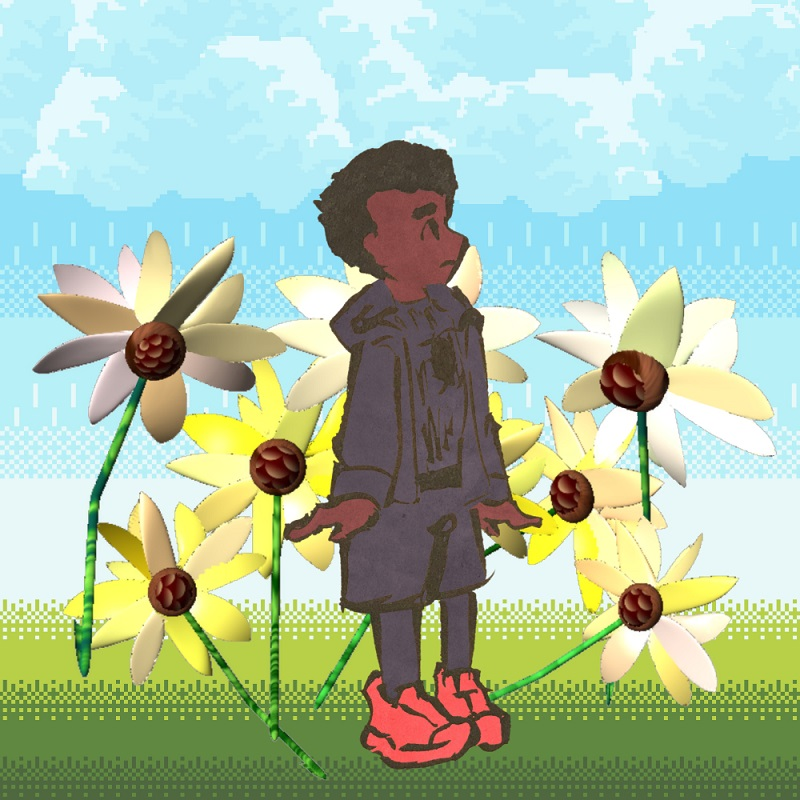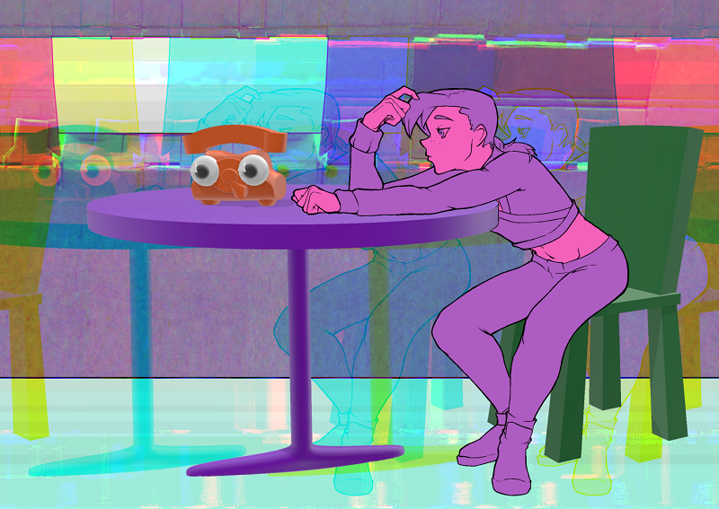(2019) I was really proud of those sunflowers, so I reused them on this website. I "rendered" them in Cosmic Blobs while I had Spider-Verse playing in the background. It played twice before I finished the flowers. The pixel-y stuff was made in DotPict on my phone. I drew Miles with a marker brush irl and colored it in CSP.
(2019) Second foray into Cosmic Blobs. The phone is based on the cover of Jack Stauber's Baby Hotline. The background is a cardboard box that my sibling had been cutting up for their own art project. I made it all glitchy using this Processing script. This is technically also a collab with my dear friend Alice, because she redlined Doppio for me. Look at how skinny and inaccurate he was before the redlines!
No backgrounds here, but I'm still proud of them
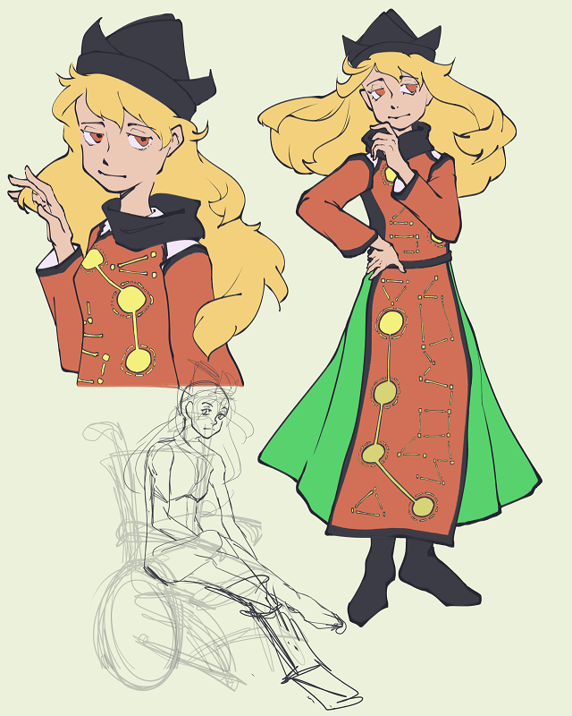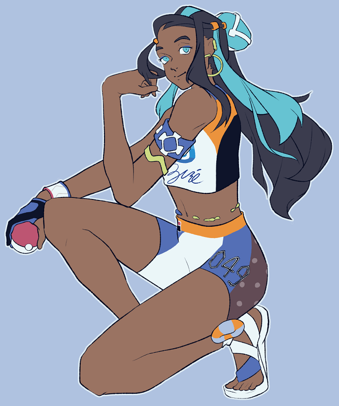(2020) I have lost the brush settings for this since then :( It was a very unruly brush but the thick gooeyness was kinda fun, if bad for drawing anything but moeblob characters.
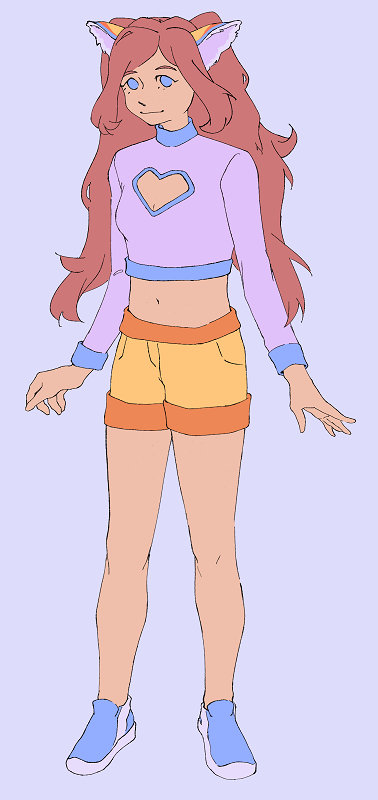(2020) I wanted to draw all the SwSh gym leaders but I gave up.
(2019 I think) My friend Alice's OC, Anathema.
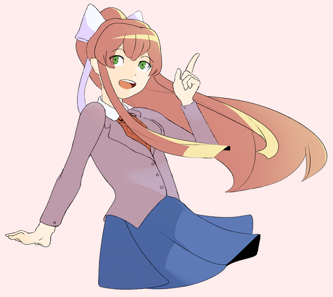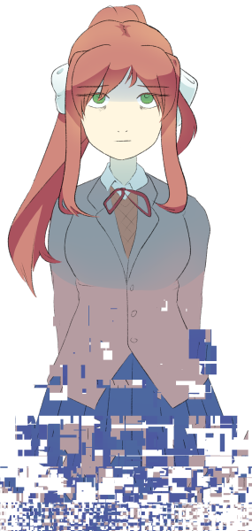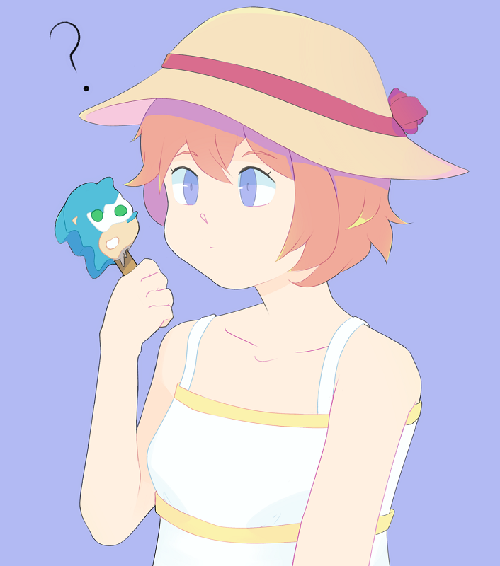
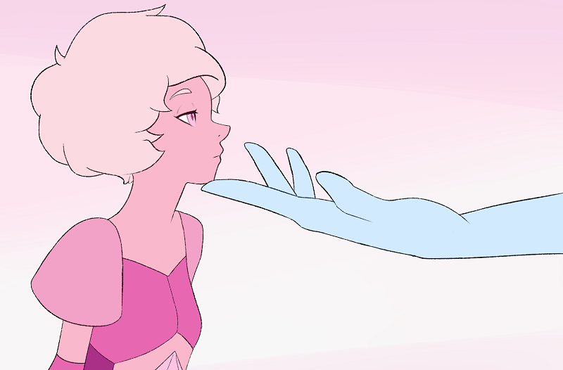(2018) From late 2017 to 2019 I was extremely invested in Doki Doki Literature Club. I bought the Switch ver. but I haven't actually played it yet.
(2017 I think) Redraw of a Steven Universe screenshot. After all this time I still have Complicated Feelings.
Comms I did that I'm still proud of
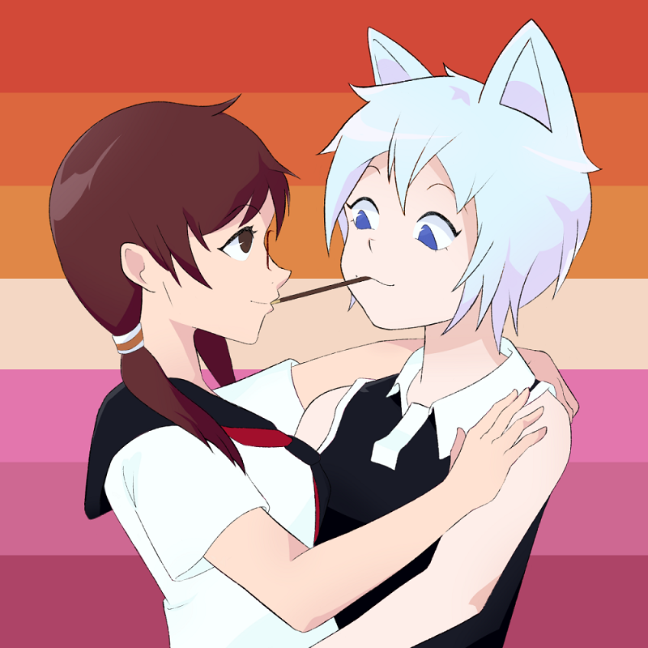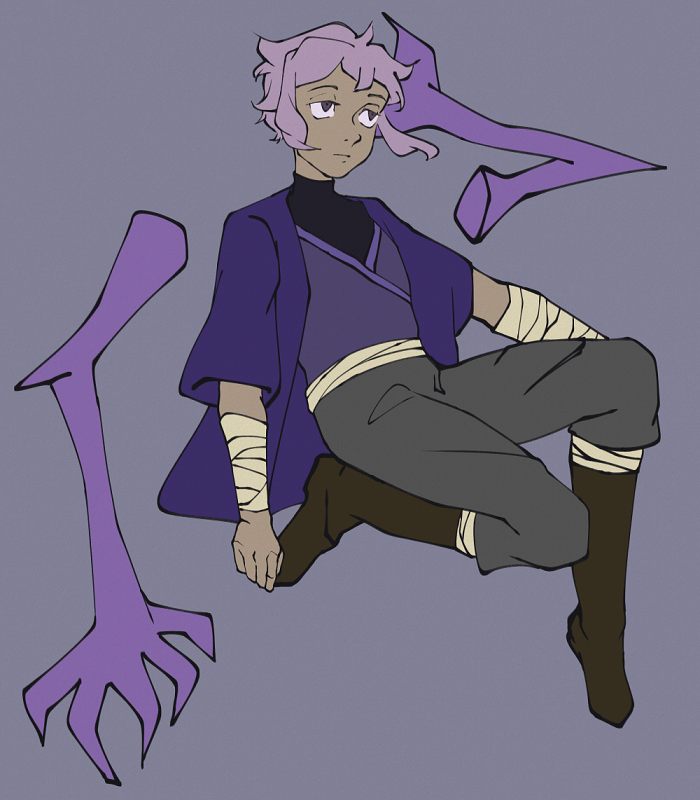For Xairathan on Flight Rising
For cryptography on Flight Rising